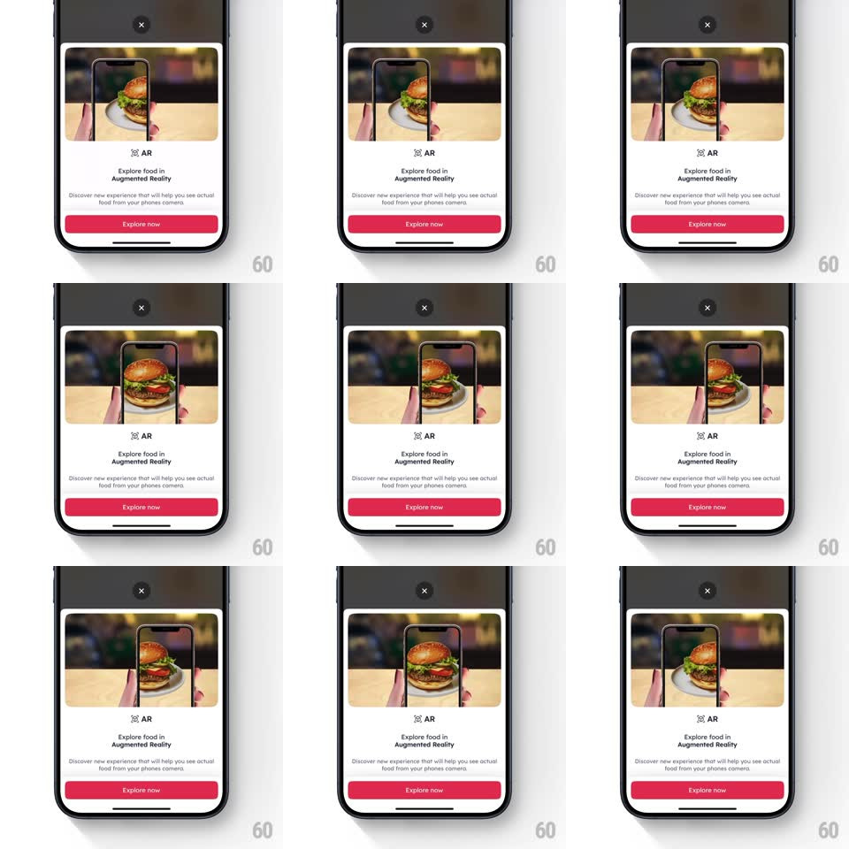

Media
Frame-by-frame

Rebuild this interaction 1:1: Zomato's AR intro sheet - an onboarding bottom sheet whose hero slot auto-plays a looping preview of a phone camera finding a table and placing a 3D burger on a plate, over copy and a red Explore now button.

Rebuild this interaction 1:1: Zomato's AR intro sheet - an onboarding bottom sheet whose hero slot auto-plays a looping preview of a phone camera finding a table and placing a 3D burger on a plate, over copy and a red Explore now button. ## Integration Integration: stack-agnostic spec - springs given as stiffness/damping, timed motions as duration + curve; map every value to your framework and animation library of choice. ## Scene A white bottom sheet over the dimmed page: top hero (a looping clip of hands holding a phone; through its screen a rendered burger sits on a real table plate), then a small "AR" badge, "Explore food in Augmented Reality" headline, the subline "Discover new experience that will help you see actual food from your phones camera.", and a full-width red "Explore now" button. X close sits top-center above the sheet. ## Motion spec Pattern: auto-playing hero loop in a sheet. - The sheet rises on open (spring ~340/24, 350ms) with the scrim fading in behind. - The hero clip loops automatically (muted, ~4s): the phone drifts slightly as the camera "finds" the surface, the burger pops onto the plate (scale 0 -> 1, quick spring) mid-loop, holds, then the loop crossfades back to its first frame seamlessly. - The badge, headline, subline, and button stagger in after the sheet lands (60ms apart, fade + translateY 8pt). - Explore now presses with a scale 0.97 bounce; X or drag-down dismisses the sheet (drag 1:1, release springs back under 30% progress or flings closed). ## Calibration - The loop's seam is invisible - crossfade the last 300ms into the first frame. - The hero plays inline and muted; it must never take audio focus. ## Reduced motion Static hero frame (burger placed); no loop. ## Don't miss - The X sits above the sheet on the scrim, not inside the sheet. - The burger cast shadow on the plate sells the AR - keep it in the loop.